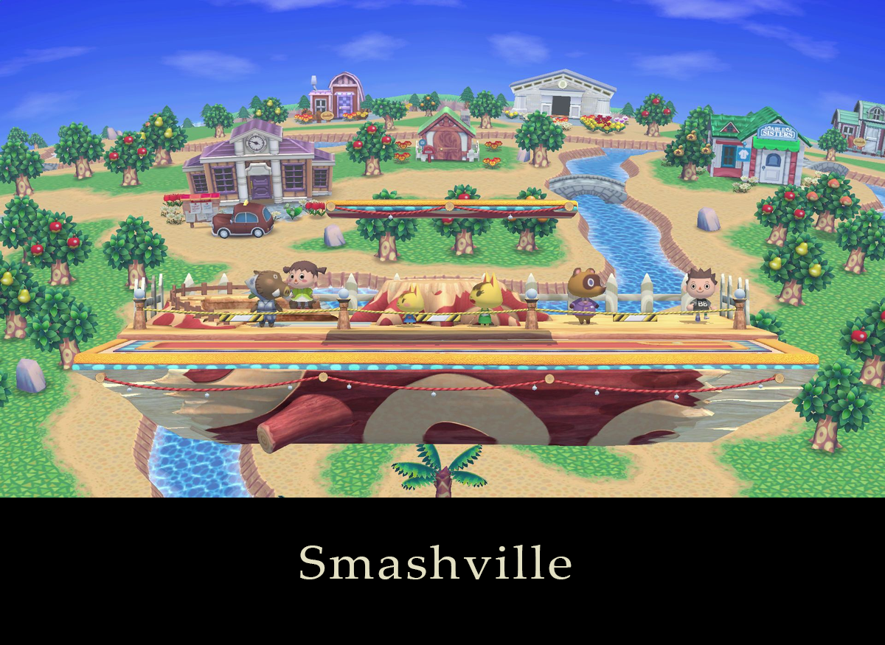
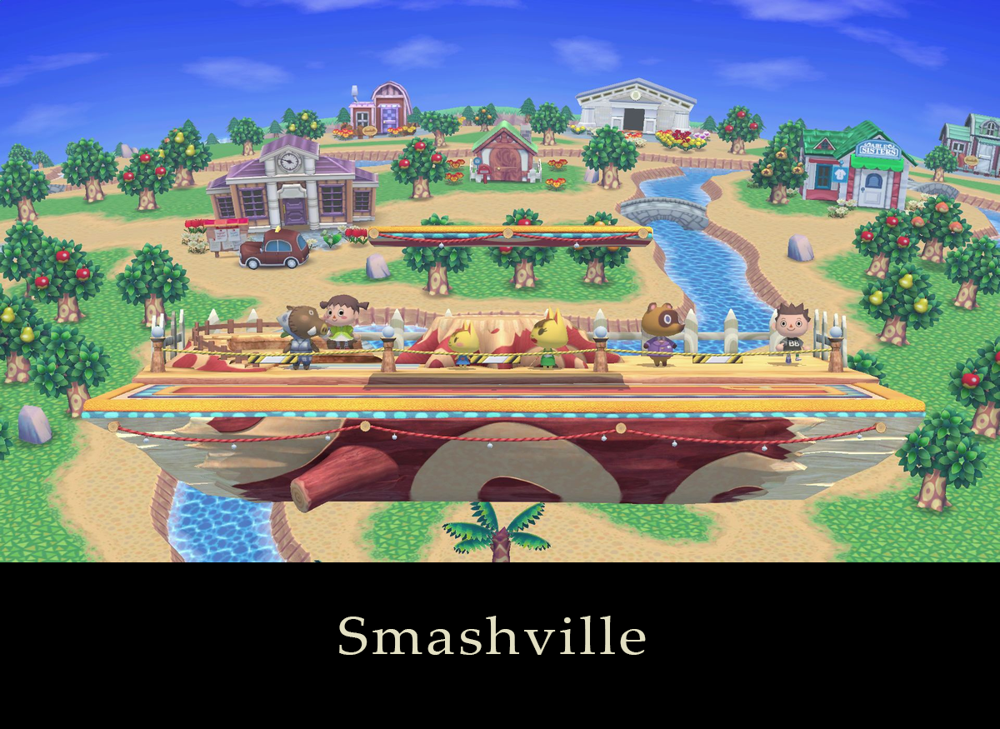

Bracket Rules
Rule writeup by Kendall Zane
Legal StagesVenue Rules
Tourney Format
Set Procedure
Other Rules
In Conclusion
Stage List
* = Counterpicks
 



Any player who selects Battlefield or Final Destination may instead choose to play on any stage’s Battlefield or Omega form, respectively. Stage Hazards are always turned off.
Venue Rules
Our club is in good standing with Purdue University, and we are graciously allowed to use one of their computer labs for our events and meetings. For that reason, and for the sake of respecting your fellow players and our equipment, please observe the following venue rules:
The Tournament Format
The bracket is double elimination, meaning that there is a winners bracket and a losers bracket. Losing two sets will eliminate you from the tournament. The winner of the Winners Finals and Losers Finals will face off in Grand Finals. Whoever comes from Winners will win the tournament if they win the set, but whoever comes from Losers will have to win one set to send the other player to Losers, then whoever wins that following set will win the tournament. Our tournament doesn’t have any pre-qualifying pools or brackets, so everyone is entered into the same bracket. A game is one single played game of Smash Bros. A set (or a match) is multiple consecutive games. The sets at our tournaments are best-of-3 (or first-to-2), meaning that the player who wins two games first will win the set and advance through the bracket. Winners Finals, Losers Finals, and Grand Finals are instead best-of-5 (first-to-three). Our brackets are seeded, which means that they are designed in such a way that our more skilled players will usually meet each other later in the bracket. Anyone who demonstrates good performance in tournament will tend to be given a higher seed, while newer, less known players will begin with a low seed. — Throwdown Thursday Ruleset and Procedures — Throwdown Thursday will usually be singles (1-on-1) matches, but may on rare occasion feature other formats such as doubles (2-on-2). We will announce each weekly’s format ahead of time. Each setup will be on the latest game version, will have all available characters, and will be set to English. Game Settings:
Set Procedure
- Each player chooses the characters they will use for the first game. A double blind pick may be requested by either player (both players write down a character name, then they both will reveal their selection simultaneously and will be forced to select that character for the first game).
- Both players will play rock-paper-scissors. The player who wins will decide who begins to counterpick stages first.
- The player chosen to begin stage counterpicks will strike one of the five starter stages. The other player will strike two of the remaining four stages. Then, the chosen player will strike one of the two remaining stages, choosing which stage will be played for the first game.
- Both players play the game. If the game goes to Sudden Death, the player with lower percent wins. In the rare event of an exact tie, a one-stock, two minute game will be played on the same stage to determine a winner.
- The player who wins the previous game will, out of the eight legal stages, strike two of them. The player who lost the previous game will choose one of the six remaining stages to play on. They are not allowed to choose the previous stage they won on in the set, if they’ve already won a game (Modified Dave’s Stupid Rule).
- The player who wins the previous game will then either choose to remain with the same character they just played with, or will choose a different character. The player who lost the previous game will then do the same.
- Repeat from Step 4 until one player has won enough games to win the set (two, or three if the set is Winners Finals, Losers Finals, or Grand Finals).
Other Rules
- For the doubles (2-on-2) format:
- Team Attack is on.
- Stock sharing is allowed.
- Don’t swap controllers mid-game with your partner.
- Please choose character colors that match the team color you are playing on, or at least don’t heavily clash with it. For example, if you are playing Kirby on the Green Team, please choose either Kirby’s green color or his black-and-white color.
In Conclusion
If you are unsure about a ruling or our tournament procedure, you may ask a Tournament Organizer or another player for guidance. It may be a lot to take in at first, but in time everything will come naturally. If you have other questions, or if you’d like to socialize with the Purdue Smash Ultimate Club outside of tournaments, feel free to join our Discord server at https://discord.gg/ftrjZaj. Good luck, have fun, and show :ZERO_MERCY: